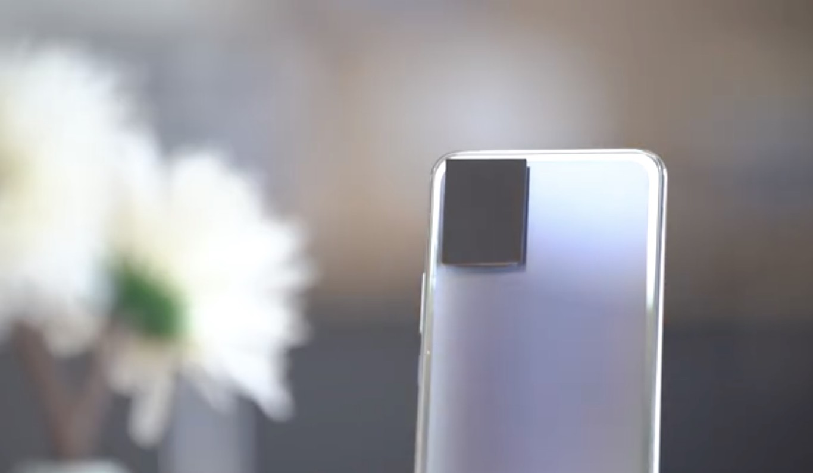

Un móvil que cambia de color con pulsar un botón: Vivo muestra su última y alucinante tecnología en vídeo

Pulsas un botón en tu móvil y de repente pasa de tener un degradado azulado a unos tonos grises, lo pulsas de nuevo y vuelve a ser azul. Por extraño que parezca, es algo posible de hacer, o al menos eso dice Vivo. El fabricante asiático ha publicado un nuevo vídeo demostrando esta peculiar característica para sus futuros smartphones que podrán cambiar de color con pulsar un botón.
El pasado mes de enero con el CES desde OnePlus nos sorprendieron con el OnePlus Concept One, que entre otras cosas permitía "tapar" las lentes de la cámara trasera oscureciendo el cristal. Parece ser que esta misma tecnología es la que ha decidido utilizar Vivo para su cambio de color en la parte trasera del móvil.
La marca ha publicado en Wiebo un vídeo donde muestran cómo el teléfono cambia de color gracias al cristal electrocrómico. En el caso de Vivo se desplazan entre un degradado azul intenso y un gris con tonalidades azules también. Se aprecia mejor en el vídeo:
Otro vídeo más ha aparecido mostrando esencialmente lo mismo:
Finalmente, @UniverseIce ha publicado en Twitter un vídeo en el que también se muestra esta "decoloración" de la parte trasera del teléfono según se pulse o no el botón:
A mobile phone brand is developing a mobile phone with a discoloration rear case, which can adjust the speed of discoloration. Maybe the smart phone will only have one color in the future: discoloration pic.twitter.com/kSg5NSD0tL
— Ice universe (@UniverseIce) September 3, 2020
La "magia" detrás del vidrio electrcrómico
Lo cierto es que el vidrio electrocrómico no es ninguna tecnología novedosa. Quizás en móviles, pero no en otras industrias. Durante años se ha utilizado este concepto para modificar el tinte de cristales en aviones, hoteles o coches de lujo. Esta tecnología permite que el material cambie de color gracias al cambio de voltaje que se aplica sobre él.
Prácticamente en todas las ocasiones se cambia de un vidrio transparente a uno tintado y oscurecido, como en el móvil de OnePlus. Vivo sin embargo parece haber ido un paso más allá en esta ocasión jugando con un azul y su decoloración para convertirse en plateado. En todo caso, parece ser que de momento la tecnología se limita a "dos colores" y no permite saltar a una variedad más amplia de colores.
Veremos si en los próximos meses los teléfonos de gama alta de Vivo integran esta nueva tecnología. Aseguran en el vídeo que también han tratado de cuidar la eficiencia de la tecnología para evitar que el consumo de batería sea alto al activar, desactivar o usar este cambio de color. Una personalización del smartphone que sin duda es única.